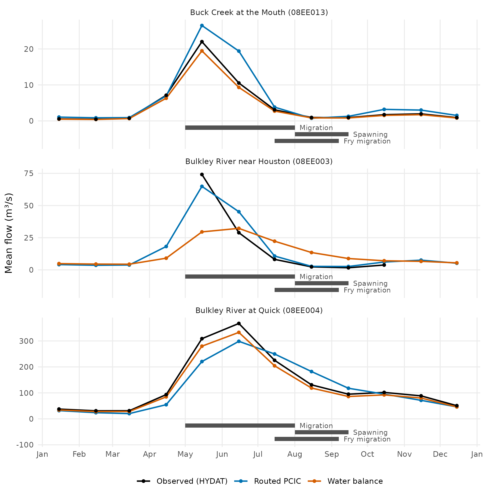
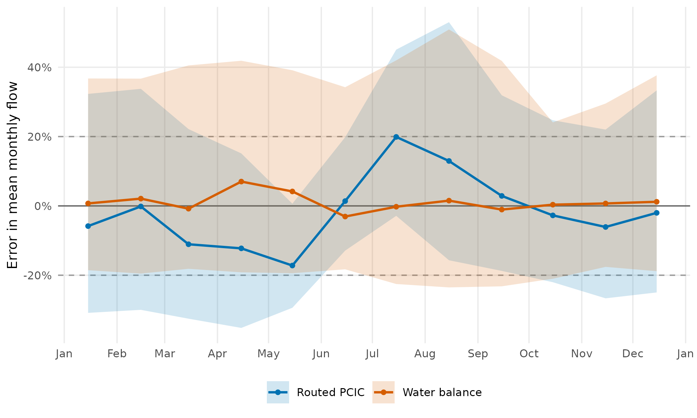

What it is
The R package wet
(Irvine
2026c) publishes the mean flow of British Columbia’s
Freshwater Atlas stream segments, in cubic metres per second, for the
year, each month and each day. Few streams in BC have a gauge, so this
gives almost every one of them an estimate: what flow a stream carries
in the weeks a fish needs it, and how that compares with the next
stream. Each value comes from one of two sources, and the map shows
which one a reader gets by default on BC’s larger rivers.

The source of the default flow (pick, under “Which value to
use”) on main-flow rivers of stream order 5 and up (wider for higher
orders), 6% of BC’s segments, and the 315 calibration gauges. Smaller
streams are not drawn, nor the few (under 1%) of that order with
neither. Labels name the Liard and the Nechako Reservoir; the scale bar
is 600 km.
It is public, in three datasets:
-
segment_monthly: each segment’s flow from each source, for the year (month 0) and the twelve calendar months. -
watershed_monthly: the same per fundamental watershed, the small polygon each segment drains, from the water balance only. -
segment_daily:segment_monthlyper day (29 February folded into 28).
Each row comes from one of two sources, both over 1981–2010:
Routed PCIC (pcic_routed). The Pacific
Climate Impacts Consortium (PCIC) at the University of Victoria models
runoff with VIC-GL (Schnorbus 2018) and
routes it down its rivers with Raven (Craig et al.
2020), published as hydromosaic. New
Graph’s fork
of the PostgreSQL tools fwapg (Norris
2024; Norris and Irvine
2026) places that flow on Freshwater Atlas segments, as the
fork’s notes set out.
Open water balance (wet_balance).
wet‘s own estimate, after Chapman et
al. (2018):
precipitation less actual evapotranspiration from climate normals,
averaged over each watershed’s upstream area and adjusted per hydrologic
zone against the Water Survey of Canada’s HYDAT
gauges. The year is split into months by the shares of the year carried
by the five gauges most like the place, matched on elevation, location
and snow (wet_share_fit()), and each month into days by the
same gauges’ pattern, so its days average to its months and its months
add up to its year. It covers almost all of BC, and its code and inputs
are open.
Neither is the gauge record.
Which value to use
Most segments, 69%, have a value from both sources, and the two
differ, so one row per segment is marked as the default with
pick. It is chosen once per segment, on annual flow, and
the same source is picked for every month and day:
- routed PCIC, where it has a value;
- the balance where routed PCIC’s annual flow is under a fifth of the balance’s on a segment that lies on its own watershed’s line. Off that line (side channels, and connectors and waterbody connections the lookup gives another line’s watershed), routed PCIC is kept however low it is;
- whichever has a value, where only one does.
pick takes routed PCIC on 64% of the Freshwater Atlas’s
segments and the balance on 28%: on 5% of all segments because routed
flow is far low there, and on the rest because routed PCIC has none. The
balance takes every segment with a value in the Liard, where routed PCIC
has none, and 98% of those in the four Nechako Reservoir groups, where
routed flow is far below the balance’s.
How to read it
wet knows where the parts are, so reading a stream takes
its linear_feature_id and its watershed group. The parts
are sorted by group, so naming it lets duckdb (Mühleisen
and Raasveldt 2026) skip everything outside it, and the read
takes seconds; the months can be read without it, and the days
cannot:
library(wet)
# Buck Creek at its mouth, where gauge 08EE013 sits
q <- wet_segment_monthly(NULL, 17094080, groups = "BULK")
# twelve months a column per source
reshape(q[q$month > 0, c("source", "month", "q_m3s")], idvar = "month",
timevar = "source", direction = "wide")wet_segment_monthly() returns
linear_feature_id, month, q_m3s, source, the shape of
wet_station_monthly()’s gauge record, so a comparison is a
join on month. A segment a source lacks comes back with
NA months, not missing rows.
wet_segment_daily() reads a segment’s days, and
wet_flow_window() the mean flow over a timing window from
days or months:
q <- wet_segment_daily(NULL, 17094080, groups = "BULK")
wet_flow_window(q, data.frame(window = "spring", start = "04-15", end = "06-15"))A whole group’s default annual flow is one query on the parts.
scenario, forcing and source are
in each part’s path, not the file, so read with
hive_partitioning:
cat <- wet_catalog() # the manifest: one row per part, with its href
segs <- cat$href[cat$dataset == "discharge/fwa/v1/segment_monthly"]
duck <- DBI::dbConnect(duckdb::duckdb())
DBI::dbExecute(duck, "INSTALL httpfs; LOAD httpfs;")
DBI::dbGetQuery(duck, sprintf("
SELECT linear_feature_id, source, q_m3s
FROM read_parquet([%s], hive_partitioning = true)
WHERE scenario = 'historical' AND watershed_group_code = 'BULK' AND month = 0 AND pick",
paste0("'", segs, "'", collapse = ", ")))Or load it into PostgreSQL beside
the Freshwater Atlas, where wet_segment_monthly() also
reads it when given the connection:
conn <- DBI::dbConnect(RPostgres::Postgres(), dbname = "fwapg")
wet_db_load(conn, cat) # discharge.fwa_v1_segment_monthlyBesides flow (q_m3s) a row carries
runoff_mm, the same water as a depth over the area upstream
(NA for a routed row off its watershed’s own line),
coverage, the share of that area the balance’s inputs cover
(NA on a routed row), and period.
What a year looks like
The Bulkley River, in west-central BC, flows north-west from Houston to join the Skeena at Hazelton. Three gauges in its basin sit one inside the next. Buck Creek joins the Bulkley at Houston; the Houston gauge sits just downstream and measures it too, and the Quick gauge, further down, drains the whole basin above. Buck Creek and Quick are among the gauges the water balance is built on. Houston is not: it reads only in open water and has no complete year in 1981–2010.
The strips under the hydrographs are chinook salmon life history timing windows on the Bulkley, the weeks each life stage needs the river: adults migrating upstream from May 1 to Aug 1, spawning from Aug 1 to Sep 15, and fry moving downstream from Jul 15 to Sep 7. They come from New Graph’s species-timing table, which cites Gottesfeld and Rabnett (2007).

Mean monthly flow on the three gauges’ segments from each source, beside the gauge’s observed monthly means over 1981–2010. At Bulkley River near Houston (08EE003), a seasonal gauge, only the months with 10 or more years of 20 days’ flow are drawn (May–October). The strips under each panel are the chinook life history timing windows.
Buck Creek peaks in May, and so does routed PCIC, which overshoots it: its May–June flow is 23 m³/s against 16.4 at the gauge. At Quick, routed PCIC is about a quarter short in May–June (259 m³/s against 338) and high in July and August.
At Buck Creek and Quick the balance’s published months are in-sample: the gauge most like each of them is itself, so the balance there has the gauge’s own monthly pattern at the balance’s annual flow, about −12% and −9% in every month. The scores below hold each gauge out instead. At Houston the balance is a true estimate for an ungauged site, and the gauge can check it only in open water.
How good it is
Routed PCIC’s yearly flow is the closer of the two at 168 of the 279 gauges both are scored at. Month by month the two score about the same, and routed PCIC errs with the season. Each source is scored against a gauge’s mean annual runoff and monthly means over its complete years in 1981–2010: the balance at the 315 HYDAT gauges it is built on, and routed PCIC at 279 of them. Error is modelled minus observed, as a percentage of observed. The balance is scored held out: each Water Survey sub-sub-drainage (such as 08EE) is left out of the fit in turn and predicted from the rest, so a gauge’s neighbours in the same sub-sub-drainage cannot vouch for it. Routed PCIC is scored on the segment each gauge snapped to: 290 gauges have routed flow, less 11 whose segment carries under a fifth of the gauge’s flow, which the routed comparison leaves out and attributes one by one.
| Routed PCIC, 279 gauges | Open water balance (held out), 279 gauges | Open water balance (held out), all 315 | |
|---|---|---|---|
| Yearly: mean absolute error | 21.5% | 27.2% | 27.5% |
| Bias (mean error) | +5.1% | +9.3% | +8.5% |
| Middle half of errors | −12% to +13% | −14% to +24% | −16% to +24% |
| Within ±20% | 66% | 55% | 53% |
| Monthly: median Nash–Sutcliffe efficiency | 0.82 (very good) | 0.82 (very good) | 0.81 (very good) |
| Median error, lowest and highest month | −17% (May) to +20% (Jul) | −3% (Jun) to +10% (Apr) | −3% (Jun) to +7% (Apr) |
| Gauge-months within ±20% | 40% | 42% | 41% |
| PCIC does not list the gauges it calibrated to, so its errors may be partly in sample. | |||
| Nash–Sutcliffe efficiency (Nash and Sutcliffe 1970): how much closer a source’s twelve months come to the gauge’s than a flat line at the gauge’s annual mean. 1 is a perfect match; 0 is no closer than the flat line. Ratings follow Moriasi and others (2007): very good above 0.75, good above 0.65, satisfactory above 0.50. |

Error in mean monthly flow by month: the median (line) and the middle half of gauges (band), as a percentage of the gauge’s 1981–2010 mean. The water balance is held out at all 315 calibration gauges; routed PCIC at the 279 it is scored at. Dashed lines mark ±20%.
Where each is weak:
- The season, routed PCIC. It is low from March to May and high in July and August, as if its melt started late and ran on. Each half holds at most of its gauges, not only at the median (low in spring at 66%, high in summer at 68%), so it is the model’s, not the placement’s: a misplaced outlet changes one gauge’s flow; it would not lower the spring at most gauges and raise the summer at most of them.
- Spread, the balance. Across all 315 gauges its median monthly error is within ±10% in every month, but in no month are half of the gauges within ±20%. Where a gauge’s flow peaks in May or June, the balance more often falls short in that month than overshoots.
- Headwaters and small basins, the balance. It averages 31% yearly error at headwater gauges, whose basin holds no other gauge, against 18% at nested ones, and 40% on basins under 100 km² against 20% on those over 1,000 km². By monthly score it is still the stronger source under 1,000 km².
- The dry interior, the balance. In zone 24, the Southern Thompson Plateau, its 9 gauges average 93%: runoff there is a small remainder of precipitation, so a small error in evapotranspiration is a large one in runoff.
- Large basins and lake outlets, the balance. By monthly score routed PCIC is the stronger source over 1,000 km² and at lake outlets, whose flow a lake holds back and releases later in the year: routing follows the lake, and the balance’s donor gauges are matched without regard to it.
- The Liard, routed PCIC. It has no value at 25 gauges, most of them in the Liard, where the balance is the only estimate.
Flow in a timing window, from months or from days
Read from monthly means, every day of a timing window takes its month’s mean. That costs almost nothing where a timing window spans whole months, as migration does from 1 May to 1 August, and little where the month it cuts changes slowly: spawning ends mid-September, and the gauge’s own monthly means and daily record agree within 3%. Fry migration takes the second half of July, as the freshet recedes, and there the monthly means overstate the gauge by about a quarter.
The published days remove that cost where a source’s daily pattern is right. Routed PCIC’s fry-migration error shrinks at both gauges. The balance’s days at Buck Creek fall with the gauge’s, since its pattern there is the gauge’s own, and only its annual error remains. At Houston its borrowed pattern keeps more water into late summer, and the balance stays several times the gauge in both late-summer timing windows. That error is ours.
| Gauge | Timing window | Years | Daily record (m³/s) | Months vs days | Routed PCIC, months | Routed PCIC, days | Water balance, months | Water balance, days |
|---|---|---|---|---|---|---|---|---|
| Buck Creek at the Mouth (08EE013) | Migration (May 1 – Aug 1) | 30 | 11.7 | 0% | +40% | +40% | −11% | −11% |
| Spawning (Aug 1 – Sep 15) | 29 | 0.9 | +3% | 0% | −9% | −9% | −12% | |
| Fry migration (Jul 15 – Sep 7) | 29 | 1.3 | +27% | +39% | −7% | +12% | −12% | |
| Bulkley River near Houston (08EE003) | Migration (May 1 – Aug 1) | 18 | 36.8 | 0% | +8% | +8% | −24% | −24% |
| Spawning (Aug 1 – Sep 15) | 18 | 2.1 | 0% | +29% | +24% | +470% | +479% | |
| Fry migration (Jul 15 – Sep 7) | 18 | 3.3 | +24% | +60% | +21% | +379% | +356% |
Limits
- Coverage. Besides the Liard, routed PCIC has no value in a few northern and border basins, and only some on the outer coast’s islands.
- The zone adjustment is kept by decision. On headwater basins it does not beat raw precipitation less evapotranspiration, and zones with too few gauges for their own adjustment get none.
-
Segments without a value. The balance reaches a
segment through
fwapg’s lookup matching segments to watershed polygons, and both sources are published only on matched segments, so the 8% of segments matched to none, almost all connection lines and secondary channels, have no value. - In-sample at the gauges. On a calibration gauge’s own segment the published balance is the gauge’s own monthly pattern at the balance’s annual flow (08NM240 and 08NM241, on one watershed, share the mean of theirs). A watershed much like a gauge gets almost the same pattern.
- Days. A day is right only as far as the source’s daily pattern is, and the scores above are of the months; the balance’s daily pattern is scored where it was fitted, not here.
- Houston (08EE003) is seasonal: its monthly means cover May–October, from 19 of the years 1981–2010.
- The monthly scores are province-wide, split by basin size and lake outlets, not by region or zone.
Software and citation
The flows in this article, the routed values at the gauges and the
picks on the map are the published product’s, read on 2026-10-24 from
the build at wet commit b4bbc50. Before they were written,
routed PCIC’s values were held equal to fwapg‘s routed
table and its days at the Bulkley gauges were routed again from the
sub-basin days there, and the balance’s months and days were made again
from the fit at 08EE004 and 08EE013; the build’s own check of its
published flows, its
report, covers the rest. The province shares are from the segment
table that build was cut from. The gauges’ daily flows are HYDAT’s. The
scores compare routed PCIC as published, and the balance held out by its
fit on HYDAT 2026-07-17, with HYDAT’s observed runoff.
The software, each cited:
-
wet(Irvine 2026c) builds and publishes the product. -
fwapg(Norris 2024) holds the Freshwater Atlas in PostgreSQL, and New Graph’s fork of it (Norris and Irvine 2026) places routed PCIC on it. -
climr(Daust et al. 2024) gives the balance its climate normals, andcd(Irvine 2026a) its snow normals. -
duckdb(Mühleisen and Raasveldt 2026) andDBI(R Special Interest Group on Databases (R-SIG-DB) et al. 2026) read it in the recipes above, andRPostgres(Wickham et al. 2026) loads it into PostgreSQL. -
knitr(Xie 2026b) andkableExtra(Zhu 2024) make the tables, andggplot2(Wickham 2016),gq(Irvine 2026b) andsf(Pebesma and Bivand 2023) the figures;bookdown(Xie 2026a) renders the article, all in R (R Core Team 2025).
How the balance is built, and each of its choices tested: the water balance method. To cite this package:
Irvine A (2026). wet: Stream Flow and Water Temperature for the BC Freshwater Atlas. New Graph Environment Ltd. doi:10.5281/zenodo.23305781 https://doi.org/10.5281/zenodo.23305781. Version 0.4.30, https://github.com/NewGraphEnvironment/wet.
Data
- The product:
s3://fresh-bc/discharge/fwa/v1/. The bucket allows no listing, so a reader starts from its manifest, https://fresh-bc.s3.us-west-2.amazonaws.com/discharge/fwa/v1/manifest.json, aswet_catalog()does. This article reads the build of 24 October 2026. - Routed flow: the Pacific Climate Impacts Consortium, University of
Victoria (hydromosaic: VIC-GL
hydrologic model output routed with Raven, PNWNAmet forcing), placed on
the Freshwater Atlas by New Graph’s fork of
fwapg(Norris and Irvine 2026). - Stream network: the Province of British Columbia’s Freshwater Atlas Stream Network, through DataBC (FLNRORD 2021).
- Gauge records: the Water Survey of Canada’s HYDAT (Environment and Climate Change Canada 2021), release 2026-07-17.
- Climate normals, 1981–2010, for the balance: the R package
climr(Daust et al. 2024). - Actual evapotranspiration, for the balance: CGIAR-CSI’s Global High-Resolution Soil-Water Balance v3 (figshare 7707605), held no lower than a Fu–Budyko estimate.
- Elevation: the Copernicus GLO-90 DEM.
- Snow, for the balance’s monthly shares: ERA5-Land snow normals
(Copernicus Climate Change Service), through the R package
cd(Irvine 2026a). - Hydrologic zones: the province’s BC Hydrologic Zones.
- Life history timing windows for chinook salmon: New Graph’s species-timing table (Gottesfeld and Rabnett 2007).